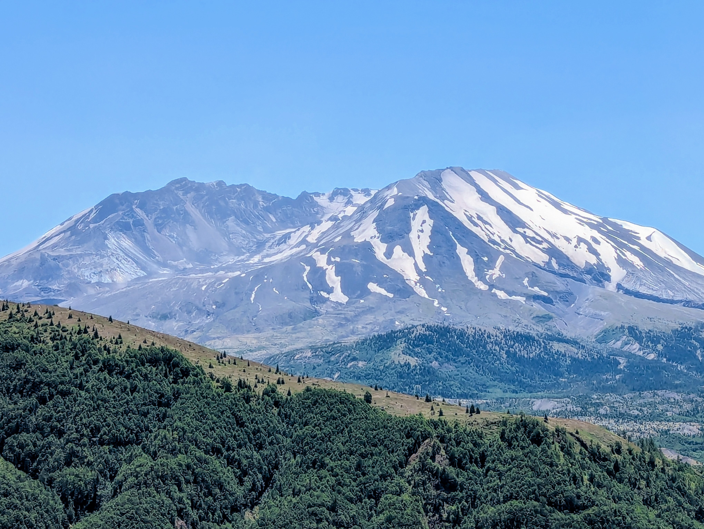
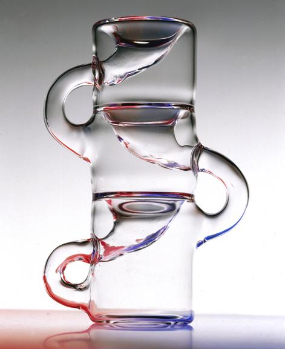
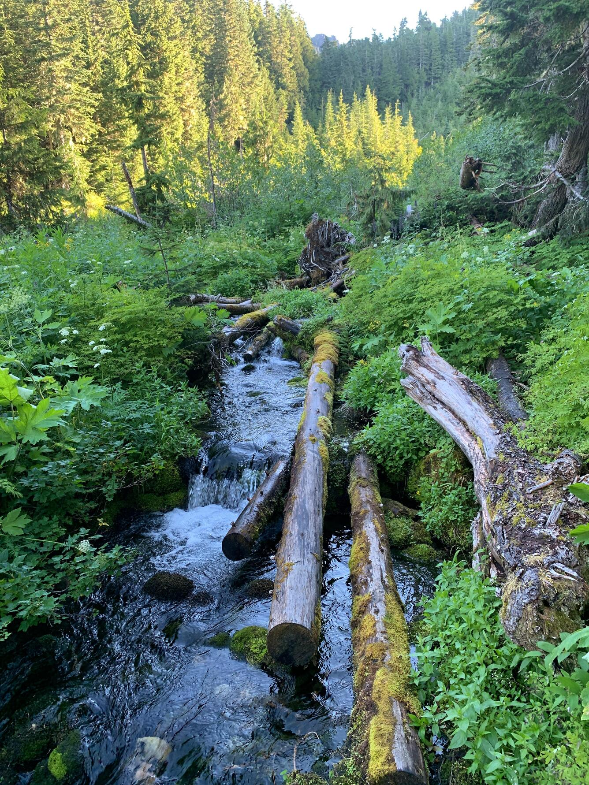

I went to school for a math and chemistry degree and while there picked some programming classes up. I had done programming in High School but not much afterward. I really enjoyed programming and getting back into it I realized I missed programming. I finished my math and chemistry degrees and kept working on programming on the side.
I have worked many years in customer servive. I spent a lot of time interacting with people, developing a friendly and helpful skillset. I currently work creating schedules for a warehouse. This is all done through email and the unique system the company uses to track appointments.

I have done a lot of things in my life and learned many skills from it. I enjoy gardening and cooking. I love being outdoors as that is where I grew up. I am endlessly fascinated by conceptual math, look up knot theory or anything related to mathematical topology. I have an odd memory for random facts and have a favorite mathematical proof.
